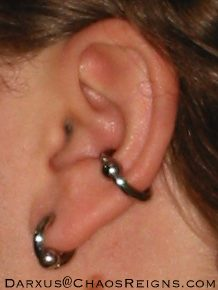

I currently have 1 piercing:
- 8ga 1/2" blue anodized titanium Anatometal CBR with steel bead, in my left
conch (a not insignificant cartilage piercing, see picture to the
right).
Timeline
~1995
Very roughly when I started wanting to get a ring in my left
earlobe.
1998
I got a coworker named Ann to drag me to get my left earlobe
pierced. Fortunately, she cared enough to not let me go to a mall
booth. Mall booths use piercing guns which are not sterile and
cause unnecessary tissue damage. Ann took me to
Infinite Body Piercing. A very
good call in my currently more educated opinion. I got them to put
a (tiny) 16ga FBR (fixed bead ring) in my left earlobe.
6/10/2001
I met
pinkee at a
Linux User Group meeting. She had
3 years of professional piercing experience. Before the first time
we hung out on 6/10/2001, I was only interested in increasing the
size of the ring in my left lobe, probably to something like a 10ga
7/16" diameter CBR.
7/4/2001
I got
pinkee to put a 6ga
(0.16" thick) steel barbell (big hunk of metal) through my left
inner conch (significant cartilage), with the intention of putting
a captive bead ring in when it heals. She used a 4mm (betwen 6ga
and 7ga) biopsy punch. It was done at a barbecue at
N-tropy's house in front of several
friends. I believe it is healing well.
Read more about this piercing.
7/28/2001
I went to rabcon (rab =
rec.arts.bodyart) with
pinkee. At the event, I got a pair
of goodart 14ga captive bead rings, and got
pinkee to put one of them in my
existing (left) lobe piercing. I also developed an interest in
getting the matching ring in my right lobe, and decided that the
numerous people wearing 00ga plugs in their earlobes looked
nice.
8/26/01
pinkee pierced my right
earlobe to match my left, and put the matching 14ga cbr in
it.
Read more about this piercing.
9/1/2001
At
pinkee's suggestion, I
changed the jewelry in my conch from the 6ga barbell to an 8ga
titanium barbell, to encourage healing.
11/8/2001
pinkee put 12ga 1/2"
Revolution 314 LVM stainless steel CBRs with hematite beads in my
lobes, replacing the smaller rings.
1/15/02
I took out, cleaned, and put the jewelry back in my conch all by
myself :) (1st time). It's still not quite healed.
1/26/02
I put 10ga 1/2" diameter CBRs in my earlobes. This was the 3rd time
I'd ever removed/reinserted my own jewelry, and the first time I
ever stretched my own piercing. I did it right after a hot shower,
and it was unbelievably effortless/painless. Because of how well it
went, I plan to go up to 8ga in one month. I want to switch to
plugs soon because the CBRs are starting to get big.
3/4/02
I finally put a CBR in my conch - 8ga 1/2" diameter steel. I like.
It fits snugly the way I wanted. 7 months from the time it was
pierced until I got the jewelry in it that I originally intended.
The CBR went in easy, so I guess it is at least close to fully
healed. I knew it would take a long time to heal, this is no
surprise.
I also stretched my lobes to 8ga 3/8" diameter steel CBRs. The
smaller diameter is a nice size. A little while ago with some input
from
pinkee I got 2 8ga wood
plugs for my lobes and an 8ga labret stud for my conch. They all
had flange type things, and I never managed to get any of them
in.
Before today I did not need any tools to remove any jewelry. Now I
need pliers to remove all of it. I should get a pair.
[The photo on this page appears to be with this set of jewelry]
4/8/02
I took the CBRs out of my lobes. In a couple weeks I plan to have
pinkee punch them at 6ga and stretch them immediately to 2ga (ebony
(black wood) plugs). They need to be stretched immediately because
of how elastic lobes are, otherwise there won't be enough pressure
to stop the bleeding. This happened as a result of noticing some
scar tissue on the top of the front of my right lobe piercing,
probably related to it being pierced with a needle. I am currently
very annoyed with myself for insisting that pinkee needle my right
lobe instead of punching them both. Punching results in cleaner,
healthier holes, so I'm basically doing this for the long term
health of the piercings. I don't plan to stretch my lobes beyond
2ga.
1/2/03, 7:19pm
pinkee punched my nipples horizontally. This may be the first time
any male had his nipples punched. She used 1.5mm (between 16 and
17ga) dermal biopsy punches (miltex part #33-31A), a taper, clamps,
corks, and 12ga polished titanium Industrial Strength barbells. I
have been looking forward to, and fearing this event for some time.
The fear was largely from how close I came to passing out when she
did my conch. This time we made sure I ate, and I came no where
near passing out. The part that was worst was probably the longer
sequence of events. When getting my conch punched, it was pretty
much make a hole and put jewelry in it and you're done. With my
nipples, it was:
- mark entrance and exit points with sharpie
- clamp the hell out of my nipples with big metal clamp things,
working it around a bunch to get it positioned just right
- hold a cork up to the opposite side
- punch (OW!)
- follow the punch back through the hole with the taper
- follow the taper through the hole with the jewelry
- remove the fucking clamp
- finish screwing on the jewelry
I unfortunately feel the need to state for the record that this
list completely skips all the steps taken for cleanliness (3 or 4
pair of gloves were used), among other things.
Anyway, I guess I didn't feel right decorating my body when I was
so unhappy with my weight. After I lost 50 pounds (and have kept it
off for 5 months), I thought rings in my nipples would look nice.
As I did with my conch, I'm healing with barbells, then switching
to rings. I don't know if I'll stretch up, or what diameter rings
I'll use. I expect them to take roughly 3 months to heal. I think
they look nice. A day later, It's weird looking down and seeing
metal bars through my nipples and not feeling pain. It looks like
that shit should hurt. A note moved from the "things I was
considering" section:
pinkee
believes that there is a fair chance that my nipples will reject
piercings, so we'll see how it goes.
6/16/02
I removed the 8ga CBRs from my earlobes to let them close up. I was
originally planning to get them punched and stretched to 2ga (I
have the ebony (black wood) plugs), but I may just leave them
unpierced.
2/22/03, 11:31am
I had lost a bead on one of my nipple barbells. pinkee just put in
my old 12ga rings with hematite beads, using the taper we used
during the piercing.
9/22/03
I finally put in my (shorter) 3/8" barbell shafts in my nipples
thismorning. The long ones had been to make room for swelling,
which hasn't been an issue for some time, the best evidence being
that I finally gave up on keeping people from playing with them a
while ago. And the length of the longer ones caused them to be more
likely to stick out and get caught on things. Any bets on how long
my girlfriends take to notice ?
After nchanter nibbled on them I asked if she noticed anything
different, she paused, then said "are they shorter?"
8/14/04
Took the cbr out of my conch for 3 days for a Motorcycle Safety
Foundation class. Didn't want to worry about it being uncomfortable
in my full helmet 9 hours a day for 2 days. It took some effort to
get it back in, in the shower. It popped in place a bit, hurt a
little. Took about a week to reheal, but has since been better
healed than it was before (after a full 3 years). Until that point,
I would still support my head with my hands when laying the left
side of my head on my pillow, to keep pressure off my ear. Taking
the ring out for 3 days has made that nolonger necessary. So I've
taken the ring out for a couple days at a time since then to let it
breathe more and encourage more healing. Considering doing that
with my nipples. Itching to get more holes.
3/26/05
Put a 14ga ring back in my left earlobe, misusing a 12ga taper
(backwards). Tip of taper wouldn't go through right lobe. I plan to
get it repierced at 14ga and stretch them both back up to 8ga. I
still have all that jewelry. The scar(?) that inspired me to remove
my lobe jewelry for 3 years is nolonger noticable. And I don't want
holes in my lobes large enough to punch the existing tunnels
out.
9/10/05
Put 12ga ring back in my left earlobe. Still need to get the right
one re-pierced.
3/14/08
Taking the ring out of my conch for one week was proving
uninteresting, so I left it out for two weeks and it was very
difficult to get back in. I expect this to add a little more useful
healing. Not that it has been a problem, but there seemed to be
room for it.
7/7/08
Maybe a month ago I switched my conch to 10ga in an attempt to get
the damn thing to finish healing (itching). It seems to have been
effective, and I'll probably put the 8ga back in next time I see
it.
1/19/13
Took my nipple jewelry out. Just decided they don't make me happy,
and are inconvenient enough to be worth removing. Largely motivated
by wanting to be able to wear tighter fitting shirts at work. But it
turns out that due to the years of having them pierced, they're still
effectively constantly erect. So I'm down to only the conch piercing.
It's doing very well. I still haven't increased the gauge, and would
still like to.
7/29/14
Replaced the 10ga ring in my conch with an 8ga 1/2" blue anodized titanium Anatometal CBR with steel bead. With shower, pliers, and lube, it went in effortlessly. The vendor I purchased it from said "A few years ago, Anatometal told us to discontinue these rings in 8g at 1/2" and smaller because they were proving too hard for customers to open and was creating a problem with returns for them." so I expected it to be at least a little challenging. It really wasn't. I can only imagine people having problems weren't even using
ring opening pliers.
2016-02-16
Partner and I got new matching blurple
Anatometal CBRs. Mine 8ga 1/2", hers 14g 5/16".
Pinkee prefers industrial strength barbells and anatometal rings.
Comment on this
page.
Darxus' Home Page
Mon May 12 17:18:31 EDT 2014